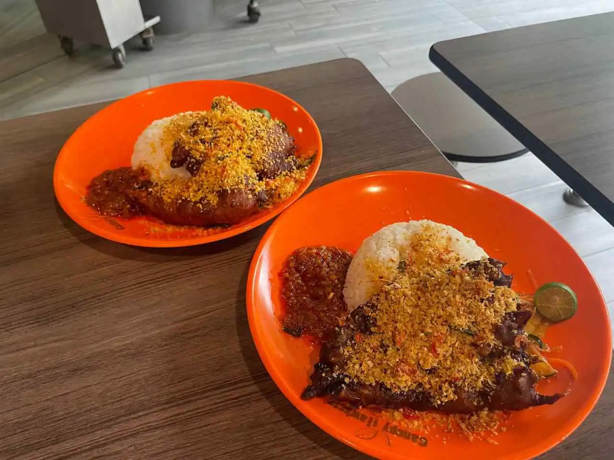

The crumbs reminded me of a lovechild between prawn cereal and HK-style typhoon shelter crab toppings.DanielFoodDiary — on the signature crumbs
The Story
MasterChef Fame,
MasterChef Fame,
Hawker Game
Derek Cheong won MasterChef Singapore Season 2 — then traded the studio kitchen for a hawker stall at Beauty World Food Centre, chasing one obsession: pushing ayam goreng berempah further than anyone thought a hawker plate could go.
Every cut is massaged with a rempah of sixteen spices — turmeric, cumin, coriander and thirteen friends — and left to marinate overnight. Fried to order. Then the signature move: a shower of fried garlic, breadcrumbs, kerisik and Japanese sakura ebi. Prawn cereal meets typhoon-shelter crab, on coconut rice.
One stall became six, across two brands — Berempah Bros and sister stall Gepuk Guys. Same fire, same crunch, every single plate.
"One dish, done properly, with a twist you won't find anywhere else."
Derek Cheong · @the.rek · Founder

the stall, somewhere past dinner rush the crunch™
the crunch™
2021
The trophy. Derek Cheong — a 23-year-old engineering undergrad and the season's youngest cook — wins MasterChef Singapore Season 2.
Jan 2026
The first stall. Berempah Bros opens at Beauty World Food Centre. The queues start almost immediately.
Early 2026
Northside. Stall No. 2 fires up at Bukit Canberra Hawker Centre, Sembawang.
Apr 2026
Heartlands. No. 3 lands at Happy Hawkers, Sengkang — next to Ranggung LRT.
Jun 2026
Number four. Woodleigh Village Hawker Centre joins the family.
Jul 2026
New brand energy. Sister stall Gepuk Guys launches at Bedok — Indonesian-inspired gepuk with cashew sambal. No pork, no lard.
Today
Six stalls, two brands, one obsession. Same rempah standards at every counter.